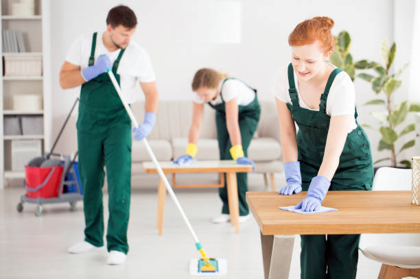
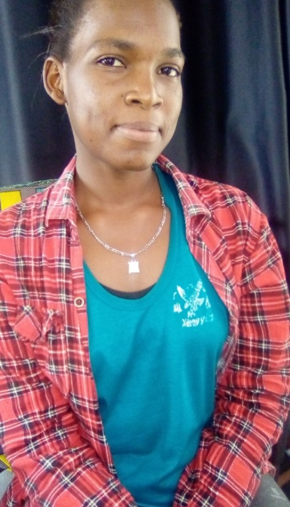

<!docktype.html>
<html>
  <head>
<title>ABOUT</title>
<link rel="stylesheet"href="./css/style.css>">
<style>
  body{
    padding: 0;
    margin: 0;
    box-sizing: border-box;
}

 .header{background-color:orchid;
   color:black;
   text-align:center;
   padding:20px;}
  .nav{background-color:orchid;
    overflow:hidden;}
  .navbar a{
    color:black;
    display:block;
    text-align:center;
    text-decoration:none;
    padding:14px 12px;
    float:left;}
  .navbar a:hover{
    background-color:white;
    color:orchid;}
  .image img{
    width:100%;
    height:500px;
    padding: 10px 20px;
    } 
  .row{
    display: flex;
    width:100%;
  }
  .colomn{
    flex: 1;
    }
  .footer{
      background-color:orchid;
      color:black;
      width:100%;
      text-align:center;}
      .team-img img{
        align-self: center;
        width: 200px;
        height: 200px;
        padding: 09px 20px;
      }
      .team-img{
        flex: 1;
      }
      .team-content{
        flex: 2;
      }
      .about-section{
        padding: 10px 20px;
        text-align: center;
      }
</style>
</html>
<body>
<div class="header">
   <h1>MAGIC CLEANERS</h1>
   <p><h2>creating the world of cleaners</h2>
  welcome</p>
</div>
<div class="navbar">
   <a href="index.html">HOME</a>
   <a href="about.html">ABOUT US</a>
   <a href="contact.html">CONTACT US</a>
<!--navbar ends here-->
</div>
<div class="image">
  
<!--images ends here-->
</div>
<div class="about-section">
  <h1>ABOUT US</h1>

     <h2>WHAT IS MAGIC CLEANERS</h2>
      <p><h4>It's a coming project that goes to deal with the cleanliness of 
         homes, buldings,offices,surroundings and environment.
        Magic cleaners are also give out laundry services and advise about cleanliness
         and sell tools for using when your doing cleanliness at your place.</h4></p>
      </div> 
<h2 style=text-align:center>OUR TEAM</h2>
<div class="row">
<div class="team-img">
  
</div>
<div class="team-content">
  <P>CEO & FOUNDER OF MAGIC CLEANERS</p>
    <P>MWAJUMA MOHAMED</P>
  <p>She is a student from apps and girls jovia class 2020,
    profecinal in mobile and web application and business and entreprenureship.
  A young girl from Tanzania Mwanza Nyamagana Igoma,To be clean in our life is 
  the one of the best the thing in our life that shoud done withevery human being,
    and that's why magic clears they come up with with general cleanliness in all over
    your place, Said MWAJUMA the CEO & FOUNDER of magic cleaners</p>
</div>
</div>
<h2>WHY MAGIC CLEANERS</h2>
<P>The magic cleaners founder has saw the problem of some people
  who are most of the time grow up serving offices so the fail 
  to do general cleanliness at their homes and 
  offices lacking honest and hygienic people.
  There is also a group of ather people themselves who grow up unable 
  to do general cleanliness even though they at home and they are successful 
  at home but she does not know how he will do this cleaning  to make his house nice,
  this group of people we also teach them how to clean.
  There others who also fail to find time to wash their clothes this is also one of
  the service we offer.In addition to the challenges of homes,office,gardenn design addition
  laundry, magic cleaners founder found the problem of employment for other youth so as the project
  progresses so do the jobs increase.</P>
</P>
</div> 
<div class="image">
  
</div>
<div class="footer">
<p><h3>www.magic cleaners.com</h3></p>
</div>  